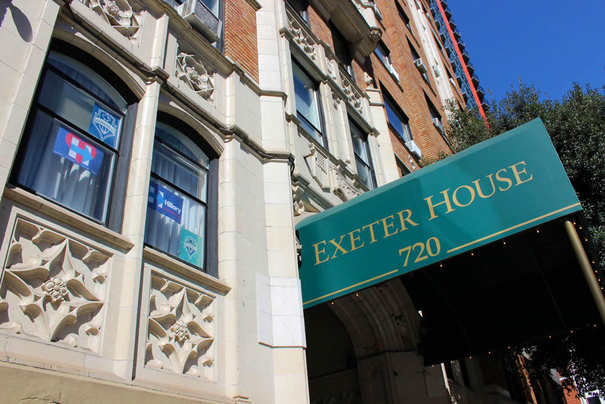

[Under Construction]
CAMPBELLs, LUGGs, & BLACKWELLs of Nelson, PA
Section 7 - Retirement Days Portion of
A SCRIBBLED STORY OF MY LIFE
by
MARY HUGHEY PRESCOTT
AUGUST 9, 1992
After we retired, we bought a home at Jamestown Bay, about six miles from Sitka. There we lived until 1964. In the spring of that year, we went to Prince Rupert, where we boarded the train, starting what we supposed would be a long and interesting trip across southern Canada as far as Quebec, then heading south down the entire east cost of the United States, until we came to Florida. Then we planned to traverse across the southern boundary of the United States until we reached California. We would go north up the west coast until we reached Washington. Then, likely in Seattle, we planned to board a ship, taking us back to Sitka, Alaska.
After we were on the train, leaving Prince Rupert, I noticed something was wrong with George. His speech became mumbled. I could hardly understand him. He also lost the power of his left arm and hand. He was having a stroke! We had to remain on the train until we reached Smithers in British Columbia. There I had to take him from the train and put him in Smithers Hospital where he stayed for two weeks. The doctor there was fine and George received wonderful care. We were able to contact our Sitka Dr. Spencer by telephone and we were able to make arrangements to return to Sitka. My niece, Marie Taylor, came from Portland. Oregon to help me and she traveled with us from Smithers, then to Prince Rupert and by ferry boat back to Sitka. George was an invalid for several weeks, but out relatives in Tacoma thought we should make every effort to come down there. So, we sold our home in Jamestown Bay, went to Tacoma and bought a nice little brick house in Tacoma.
We were not city people and when we found we could buy a semi-country place seven miles of Port Townsend, Washington, we made the move to that location, to a two acre place, partly wooded, having a comfortable house, a guest house in the back yard, a good garage, a green house, and a fine garden and the added advantage of being in what was known as the "banana belt," for it had far less rainfall than surrounding areas. It was so because the Washington Rain Forest lay directly west and much rain fell there and our area only had something like ten inches per year.
There I lived for ten years in this area named Irondale. George was with me six of those ten years. Then he went to be with the Lord. I lived on there four more years as a widow.
A hurricane which came to a large part of Washington, took the Hood Canal Bridge, also did considerable damage in our area. It took my greenhouse, turned it upside down, and demolished it.
I decided that as I was a widow, it would be best for me to to to a retirement home. I had been doing some thinking along that line. A dear friend of mine lived at Exeter House in Seattle and at her invitation, I visited her there. Katherine Whitener and her husband had been missionaries in Japan. They had come to Albuquerque, bought a home on the outskirts of that city. George and I became good friends with Reverend and Mrs. Whitener. We did many things together.
After Mr. Whetener died, Katherine had decided to live at Exeter House. I visited her there and so became interested in Exeter House as a retirement community. Finally, I made definite plans to go to Exeter.
On December 6, 1978, I was put on the preferred waiting list and I paid $1,000. On July 26, 1979, my application was approved. On the last day of July and the first day of August, I moved from Irondale, helped by Clair Doig and by one of my Irondale neighbors. Guy Rudolph, so that I got settled in August 1979 in apartment #802. In July 1980 I paid the difference and moved from #802 to the double apartment, #212-214. Reverend Henry Fawcett and Jeff Bullock helped me move. I lived in that apartment until the fall of 1985 when I moved to apartment #316.
I have left out so much of my story. So many varied and interesting things have happened. During my days at Menaul School in Albuquerque, probably the most time consuming, so a bit of that later.
Here my story ends, unless I recall some incidents which I may add. No, I can't end abruptly here. So to go back over some of the years.
One of the most important parts of my life was likely while I was still in Albuquerque at Menaul School. For a large part of my life there were the years when the Board of National Missions used me for promotional work and I was sent all over the United States, usually in the spring of the year when Presbyterial Societies met. So, I was used as a speaker in South Dakota, North Dakota, Michigan, Kentucky, Nebraska, Ohio, Kansas, Tennessee, California, Illinois, Minnesota and even Washington. I remember I spoke to Washington. I remember I spoke to Washington women in 1942 at their meeting of Presbyterial in First Presbyterian Church in Seattle. Those days of 1939, 1940, 1942, 1946, etc. were days of travel by train. I enjoyed train travel. (Now I don't even go to downtown Seattle unless I have a companion to accompany me.)
I should have written about our days in the Indian village of Metlakatha, where for nine months George took care of the Presbyterian Church. Then our days in Sitka, Alaska were memorable when we were at Sheldon Jackson School.
My life has been a busy and eventful one and I am sure I have left out much that I may want to add later.
Sincerely,
Mary H. Prescott
Monday, December 9, 1991